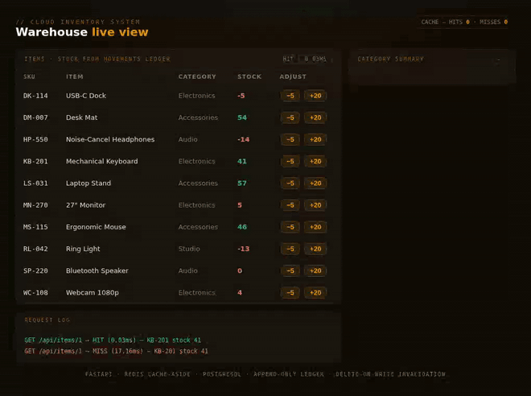
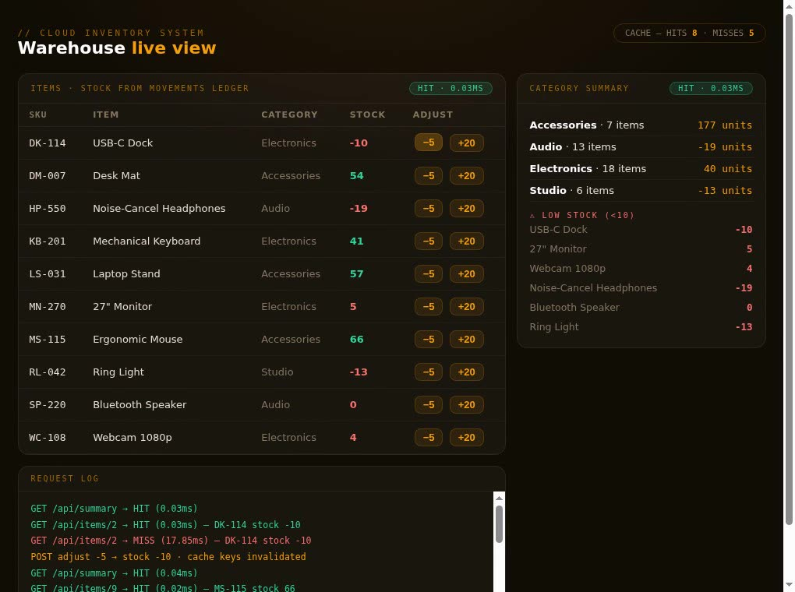

A cloud-hosted inventory management platform built through every phase of the SDLC — from requirements and architecture to deployment and monitoring. A FastAPI backend with PostgreSQL storage, Redis caching, and async processing, shipped to AWS EC2 behind a GitHub Actions CI/CD pipeline.

LIVE DASHBOARD — EVERY READ SHOWS ITS CACHE HIT/MISS AND LATENCY; EVERY WRITE INVALIDATES
Small operations track inventory in spreadsheets that go stale the moment two people edit at once. The goal: one source of truth with real-time reads, safe concurrent writes, and an API any client can build on.
Read traffic dwarfs write traffic, but reads must never show stale stock levels after a write. That tension — cache aggressively, invalidate precisely — shaped most of the backend design.
Cache-aside Redis layer keyed per resource with write-through invalidation, async pipelines for anything that doesn't need to block the request, and a CI/CD pipeline so every merge ships itself.
ARCHITECTURE
CLIENT
REST / JSON
FASTAPI
auth · validation
REDIS
cache-aside
POSTGRES
source of truth
DOCKERIZED · DEPLOYED ON AWS EC2 · SHIPPED VIA GITHUB ACTIONS
Pydantic models define every request and response shape, so validation failures are rejected at the edge with clear errors — and the OpenAPI docs generate themselves. Routes stay thin; logic lives in a service layer.
Normalized schema for items, locations, and stock movements. Stock levels are derived from an append-only movements table — every adjustment is an auditable row, not an overwrite.
Hot reads (item lookups, stock summaries) hit Redis first. Misses fall through to Postgres and populate the cache. Writes invalidate the affected keys in the same transaction boundary, so a read after a write is never stale.
GitHub Actions runs lint + tests on every push, builds the Docker image, and deploys to EC2 on merge to main. No manual steps between "approved" and "live" — the pipeline is the release process.
DEEP DIVE
An inventory system that shows stale stock is worse than a slow one — someone ships an item that isn't there. So the cache layer follows one discipline: Redis only ever holds data that Postgres has already committed, and any write that touches a resource deletes that resource's keys before the request returns.
Deleting instead of updating the cache on writes sounds wasteful but removes a whole class of bugs: there's no code path where a half-built cache entry can be read. The next reader pays one DB round-trip and repopulates it.
cache.py — the cache-aside read path
async def get_item(item_id: int, db: AsyncSession) -> Item: cache_key = f"item:{item_id}" if (cached := await redis.get(cache_key)) is not None: return Item.model_validate_json(cached) # cache hit item = await db.get(ItemRow, item_id) # miss → source of truth if item is None: raise HTTPException(404, "item not found") payload = Item.model_validate(item) await redis.set(cache_key, payload.model_dump_json(), ex=300) return payload
// TTL backstop: even if an invalidation is ever missed, staleness is bounded at 5 minutes.
items.py — the write path invalidates, then returns
async def adjust_stock(item_id: int, delta: int, db: AsyncSession): async with db.begin(): movement = StockMovement(item_id=item_id, delta=delta) db.add(movement) # append-only audit row # cache entries for this item are now lies — delete them await redis.delete(f"item:{item_id}", f"stock:{item_id}") await queue.enqueue("recompute_location_summary", item_id)
// The summary recompute is async — the caller doesn't wait for reporting math.

THE INVALIDATION, VISIBLE
The request log makes the discipline observable: a
POST adjust deletes the affected keys, the very
next read is a MISS with fresh data, and
the read after that is a sub-millisecond
HIT on the repopulated entry.
DELIVERY
The deploy story is deliberately boring: one workflow file, three jobs, zero SSH-ing into boxes at midnight. Tests gate the build, the build gates the deploy, and the EC2 host only ever runs images that passed both.
Every push runs ruff and the pytest suite against a disposable Postgres + Redis spun up as service containers. Red pipeline, no merge.
Multi-stage build keeps the runtime image small — build deps stay in the builder layer. Tagged with the commit SHA so every deploy is traceable.
On merge to main, the new container replaces the old one behind the same port. Health check must pass before the old container is removed.
TRADE-OFFS
One EC2 box is cheap and easy to reason about, but it's a single point of failure and deploys briefly drop capacity. ECS Fargate or even two instances behind an ALB would be the next step before real traffic.
Invalidating whole keys means a busy item's cache is constantly cold. A versioned-key scheme (or Redis pub/sub driving targeted updates) would keep hit rates up under write-heavy load — at the cost of the simplicity that made the current design easy to verify.
Structured logs plus EC2 health checks cover the basics, but there are no metrics dashboards or alerting thresholds yet. CloudWatch alarms on error rate and p95 latency are the obvious v2.
Built as my senior capstone through the full SDLC — requirements, architecture, implementation, deployment, and monitoring — and refined in 2026. The API, append-only stock ledger, cache-aside layer with delete-on-write invalidation, async recompute pipeline, live dashboard, and CI workflow are all functional and covered by a pytest suite. The repository is being prepared for public release on my GitHub.
Until then, the source is available on request — for a walkthrough of the architecture or a look at the code, email me and I'll share access.